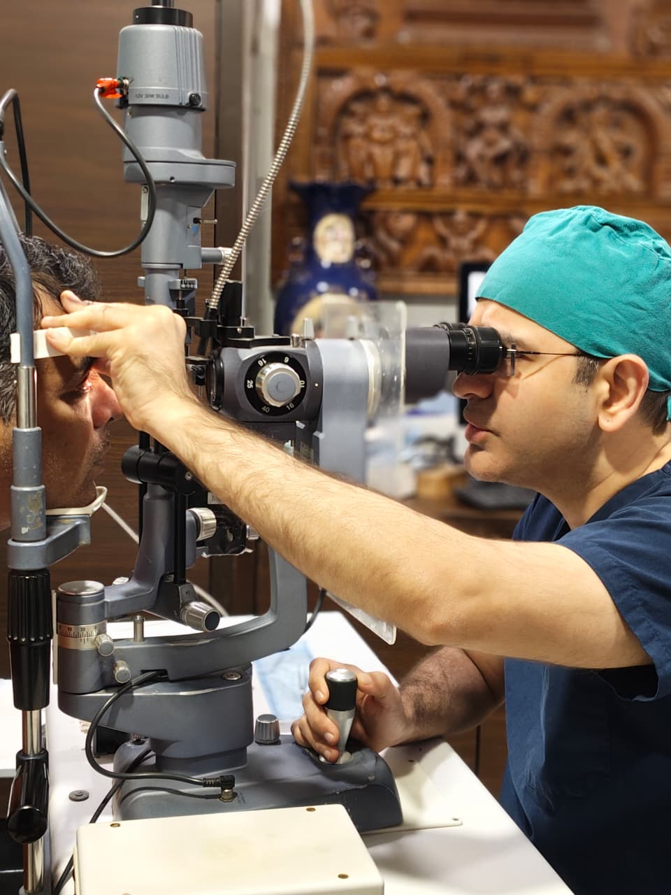

Dr. Jatin Ashar
Director & Chief Operating Surgeon
MD (AIIMS), DNB, FICO (UK), FAICO & a fellow of L V Prasad Eye Institute
Cataract, Cornea and Refractive surgery specialist
Soft-spoken, compassionate and an intellectual man, Dr. Ashar trained at the prestigious 'All India Institute of Medical Sciences', New Delhi; one of Asia's best! After his post-graduation, he completed his fellowship in Cornea and Anterior Segment from the world renowned L. V. Prasad Eye Institute. Later on, he was appointed as the main cornea consultant at the 'New Tertiary Care Center' at the same institute.
Specialties: Cataract, Cornea, Lasik and Refractive Surgery Specialist
18+
Years Experience
99%
Success Rate
99%
Happy Patients
person About the Doctor
Remarkable sensitivity to patients' needs and providing the warmth of compassionate healing makes us stand apart. Technology is mandatory for high standards of care and Mumbai Eye Care understands that. We use only the latest technology and best in the class equipment throughout the hospital.
His areas of expertise are Lamellar Keratoplasty, Pediatric Keratoplasties and Laser LASIK Surgery. He has gifted sight to many who could not see due to corneal pathologies by performing Corneal Transplantation.
His knowledge and proficiency has positioned MEC amongst the 'Best Eye Care Centres' providing quality eye care with new technology, latest surgical techniques and most advanced machines catering to variety of eye diseases under one roof.
visibility Areas of Expertise
Cataract Surgery
Dr. Jatin is one of the best eye doctors & eye surgeons in Ghatkopar, Mumbai area. He has expertise in performing complex cataract surgeries and also in phacoemulsification and bladeless cataract surgeries.
He has a vast experience in using multifocal lenses such as trifocal and bifocal lenses and also performed cataract surgeries in children at Mumbai eye care hospital in Ghatkopar.
Cornea Transplant
Dr. Jatin specializes in cornea transplant surgeries and he has performed a very high number of cornea surgeries such as full-thickness cornea surgery or penetrating keratoplasty, layer by layer cornea transplants such as Deep anterior lamellar keratoplasty (DALK) and the latest type of cornea surgery that is sutureless cornea transplant or Descemet's membrane endothelial keratoplasty (DMEK) and launched state of the art eye clinic for cornea surgeries in Ghatkopar.
He also trains other doctors from India and abroad in performing cornea transplant surgeries and also has a very high success rate of cornea transplant surgery.
Dr. Jatin is a medical director of an eye bank at Thane and an eye clinic at Ghatkopar and he is among the top cornea eye surgeon doctors in India.
LASIK & Refractive
Dr. Jatin performed many laser vision correction surgeries for spectacle/ glass number removal such as LASIK, LASEK, PRK, PTK, SMILE and also launched a state of the art eye hospital for LASIK in Ghatkopar. His patients say that he is among the best eye doctor for LASIK.
For patients who cannot undergo LASIK, he also is an expert at performing ICL, IPCL surgery.
emoji_events Awards & Achievements
Dr. Ashar has many feathers in his cap; to list a few –
- check_circle Youngest Indian surgeon to be invited at the 'American Academy of Ophthalmology'
- check_circle Credited with numerous awards, invited faculty at most conferences
- check_circle Publications in international journals and conferences
- check_circle Performed numerous complex cataract surgeries
- check_circle Execute corneal transplants even in infants as young as 1 month old
- check_circle Carry-Out many refractive surgeries such as LASIK, PRK, and ICL
- check_circle Among top few surgeons trained in performing 'Lamellar Keratoplasties'
- check_circle Received 'Achievement Award' from American Academy of Ophthalmology
- check_circle 'International Ophthalmologists Education Award' from American Academy of Ophthalmology
Weekly Time Table
| Day | Ghatkopar West | Ghatkopar East | Chembur |
|---|---|---|---|
| Monday | 9:00 AM – 10:15 AM | 10:30 AM – 4:30 PM | 5:00 PM – 7:00 PM |
| Tuesday | — | 10:30 AM – 4:30 PM | 5:00 PM – 7:00 PM |
| Wednesday | 9:00 AM – 10:15 AM | 10:30 AM – 4:30 PM | 5:00 PM – 7:00 PM |
| Thursday | — | 10:30 AM – 4:30 PM | 5:00 PM – 7:00 PM |
| Friday | 9:00 AM – 10:15 AM | 10:30 AM – 4:30 PM | 5:00 PM – 7:00 PM |
| Saturday | — | 10:30 AM – 4:30 PM | 5:00 PM – 7:00 PM |